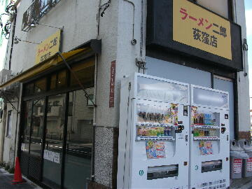
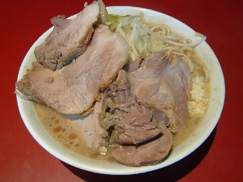

杉並区 荻窪 4-33-1
日・木・祝
11：30〜14：30 18：00〜22：00
土 11：30〜17：30

小ラーメン 700円、小豚 850円
大ラーメン 800円、大豚 950円
玉子 50円
店員は、桜台で修行した店主と助手２名。
胡椒、唐辛子、醤油ダレ。
特別な香辛料が給水機の脇にあるときもある。
レンゲ有。エコ箸。ティッシュ有。名刺無。
BGMは、ラジオ。
トッピングは、二郎標準。
食券を買ってから行列に並ぶ。
ラーメン二郎 荻窪店 荻窪店の公式HP
「ラーメン二郎 荻窪」でヤフー検索
「ラーメン二郎 荻窪」でヤフーリアルタイム検索
「ラーメン二郎 荻窪」でグーグル検索

小豚 ニンニク
麺は、直系二郎のツルツルした食感の平打ち麺。
ぶたは、肉の旨味が残っていてでかくて美味い極上なもの。とにかくデカイ。
スープは、ミルキー（←渡辺美優紀ではない）で出汁がしっかり出ているもの。
ヤサイは、モヤシ7：キャベツ3の割合。程よい茹で具合。
ニンニクは、中粒で上質なもの。
野菜の頂上にサービスが乗るときもある。
ＰＣ店